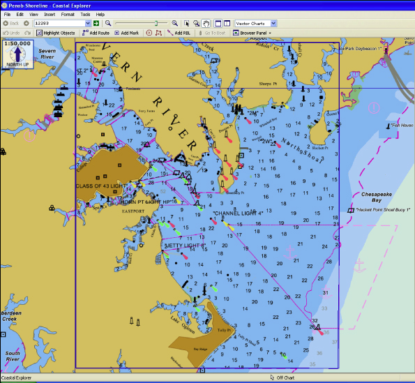

Fix VMS#
The USS Connecticut is an engineering marvel. Its nuclear power plant propels to classified speeds. Its unique hull material secures watertight integrity to classified depths. Its double deck torpedo room services eight torpedo tubes, twice the number found on other submarines.
In war, it's the apex predator of the ocean.
Yet, despite all of this, the navigational software on the $3B warship is far less capable any maps app on your phone. The software, called "Voyage Management System" (VMS), is the hub of all the ship's planning. But it can't even do basic, safety-of-ship alerting.
You want to try and dive down to 350FT even though the seafloor is at 300FT? No problem, VMS will let you do that with no alerting, even though it knows both the ship's depth and the seafloor's depth.
We don't know why the Connecticut hit a seamount. But I'm certain VMS didn't help the watchteam avoid the accident. The Submarine Force has lived with inadequate navigation software for too long. I hope you agree that it's time we fix VMS.
Basics of Planning#
Ever wonder how submarines don't hit things? Probably not. But I'm going to cover the basics to show just how poorly VMS supports navigation teams.
For the submariners, bear with me through some simplifications.
One submarine's chunk of the ocean is called its "waterspace." Shore-based offices, like air-traffic controllers, assign submarines waterspace. Once assigned waterspace, a submarine's navigation team plans how to use the space.
VMS is the hub for all this planning on the submarine. The navigation team takes the waterspace coordinates and manually inputs them into VMS. Then, they build their navigation plans ("nav plans") using the software. These plans have three elements:
- Location - What is the latitude/longitude?
- Depth - What are the minimum and maximum operating depths?
- Time - When is the submarine to be at its location and depth?
What happens if a team gets the plan wrong? Well, if they set the maximum operating depth deeper than the seafloor, a grounding happens. Let's cover how we prevent this from happening. Hint: VMS is of no help.
How to Not Hit Things#
Not hitting the seafloor is really important to submariners. Five people, including the ship's captain, independently review the navigation plans to make sure it doesn't happen. VMS provides no safeguards against operator error.
For instance, submariners have to find the shallowest part of their waterspace. Then, they use the shallowest depth to set depth restrictions. If the shallowest part of the water is 350 feet, they may restrict operations to above 300 feet.
How do submariners find the shallowest depth in their waterspace? They click around on VMS and look at each depth marker. The shallowest depth marker they spot sets the depth restrictions. The safety of the entire ship depends on a process that looks like this:
- Submariner looks over a set of depth markers on the map, noting which is the shallowest.
- Zooms to another portion of the assigned waterspace.
- Waits for VMS to load the next screen, which can take minutes.
- Reviews the set of depth markers on the map, noting which is the shallowest.
- Repeat.

Despite storing and serving up all of this depth data, VMS does nothing to assist in this review! If the crew erroneously thought that the shallowest point was 350FT, when it was actually 300FT, VMS would not stop them from planning to drive into the seafloor.
Stop Accepting Terrible Software#
It's unacceptable work from our vendors and procurement processes, and it's insufficient support of our Submarine Force. Why can't the navigation software of a $3B submarine find the minimum value of an array of numbers? Meanwhile, a $40K car can autonomously navigate city streets, charting a path home with a press of a button.
Submarine crews are tired of such poor support from VMS, forcing them to burn time reviewing charts with no automated assistance. It's as if our procurement process and the vendor collaborated to absolve themselves from any responsibility by serving us such an aggressively unhelpul tool. One can imagine them thinking, "Well, if we did the most basic alerting and warnings, and a grounding happened, we might get blamed. So let's not do anything."
Instead, it's easier to poorly support our crews, write up "operator error" as the root cause of the accident, and fire crewmembers. What are we doing to engineer software like VMS to help reduce operator error?
I'm not asking for automated VMS checks to take the place of human reviews. I'm not even asking for it to ingest waterspace messages and automtically plot it for the crew. But it's 2021 and our inability to have critical software do basic things like find the minimum sounding is unacceptable.